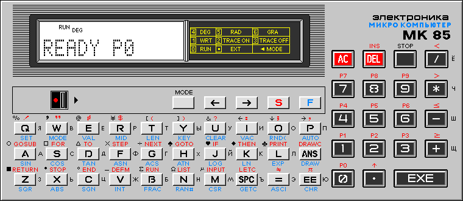
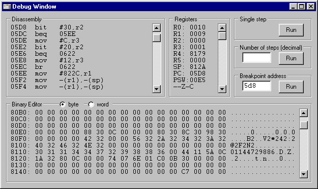

Emulator kalkulatora Elektronika MK-85
Program emuluje mikroprocesor kompatybilny z PDP-11 oraz u¿ywa oryginalnej zawarto¶ci pamiêci ROM kalkulatora.
Dziêki temu zachowuje siê prawie dok³adnie jak orygina³, ³±cznie ze wszystkimi b³êdami oraz mo¿liwo¶ci± programowania w jêzyku maszynowym.
Wymaga komputera PC z systemem Windows.
Wersja programu 49, ostatnie uaktualnienie 2019/09/07
 mk85emsr.zip - teksty ¼ród³owe programu w Delphi
mk85emsr.zip - teksty ¼ród³owe programu w Delphi
mk85emex.zip - skompilowana wersja programu
Sposób u¿ycia: rozpakowaæ pliki do pustego katalogu a nastêpnie uruchomiæ program mk85m.exe
mk85emsl.zip - wersja dla ¶rodowiska Lazarus


Panel deasemblera
- Przy wywo³aniu okna debugera pocz±tkowy adres deasemblacji jest zgodny z zawarto¶ci± rejestru Program Counter.
Mo¿na go zmieniæ klikaj±c na adres w pierwszym wierszu i wpisuj±c now± warto¶æ.
Dozwolony zakres: $0000..$7FFE dla obszaru ROM, oraz $8000..$7FFE+RamSize dla obszaru RAM.
Nowa warto¶æ musi byæ potwierdzona klawiszem Enter.
- Po klikniêciu na zdeasemblowan± instrukcjê mo¿na wpisaæ now±.
Podobnie jak w przypadku adresu, konieczne jest wci¶niêcie klawisza Enter ¿eby zmiany zosta³y przyjête.
Po zakoñczeniu programu zapamiêtywane s± tylko modyfikacje zawarto¶ci pamiêci RAM, natomiast wszelkie zmiany dokonane w obszarze ROM s± utracone.
Panel edytora binarnego
- Edytor binarny pozwala na przegl±danie/edycjê zawarto¶ci pamiêci RAM.
- Mo¿na zmieniæ adres pocz±tkowy oraz zawarto¶æ pamiêci klikaj±c na nie i wpisuj±c now± warto¶æ.
Zmiany musz± byæ potwierdzone klawiszem Enter.
Panel rejestrów
- Klikniêcie na zawarto¶æ rejestru umo¿liwia wpisanie nowej warto¶ci.
Zmiany musz± byæ potwierdzone klawiszem Enter.
- Ostatni wiersz pokazuje stan bitów TNZVC rejestru PSW.
Sterowanie programem
- Zamkniêcie okna debugera wznawia wykonywanie programu bez ¿adnego ¶ledzenia.
- Wci¶niêcie klawisza [Run] w grupie Single step powoduje wykonanie jednego rozkazu maszynowego.
- W celu wykonania okre¶lonej ilo¶ci rozkazów maszynowych nale¿y wpisaæ ¿±dan± warto¶æ (dziesiêtnie) do pola Number of steps a nastêpnie wcisn±æ przyporz±dkowany klawisz [Run].
Uwaga: przej¶cie do debugera gdy symulowany mikrokomputer jest bezczynny zwykle trafia w adres PC=$014A, gdzie oscylator jest
zatrzymany a procesor oczekuje na przerwanie z klawiatury.
Próba pracy krokowej w tym stanie nie przynosi ¿adnych efektów.
- Panel Breakpoint umo¿liwia zdefiniowanie pu³apki, tzn. warto¶ci licznika programu, której osi±gniêcie powoduje wstrzymanie wykonywania programu i ponowne wywo³anie okna debugera.
Niektóre parametry emulatora mo¿na dostosowaæ do indywidualnych potrzeb modyfikuj±c plik mk85m.ini za pomoc± dowolnego edytora tekstowego.
Opis zawarto¶ci tego pliku:
CpuSpeed=250- Ta warto¶æ okre¶la prêdko¶æ emulowanego procesora (ilo¶æ instrukcji wykonywanych co 10ms).
RamSize=2048- Ta warto¶æ definiuje fizyczny rozmiar emulowanej pamiêci RAM.
Typowe warto¶ci to 2048 dla modelu MK85 z 2kB pamiêci RAM, oraz 6144 dla modelu MK85M z 6kB pamiêci RAM.
Po ka¿dej zmianie konieczne jest skasowanie pliku ram.bin (w celu unikniêcia ostrze¿enia o próbie odczytu poza koñcem pliku) oraz inicjalizacja pamiêci za pomoc± klawisza F8 lub komendy TEST.
Radix=16- Ta warto¶æ okre¶la podstawê systemu liczbowego u¿ywan± przez debuger (16 dla szesnastkowego, 8 dla oktalnego).
W celu usuniêcia emulatora wystarczy skasowaæ podkatalog w którym zosta³ zainstalowany.
Program nie dokonuje w systemie ¿adnych zmian poza swoim podkatalogiem.
- Program jest rozwiniêciem niezakoñczonego projektu emulatora MK-85, którego autorem jest Aleksei Akatov (Arigato Software).
- Znaczna czê¶æ kodu jest oparta o projekt emulatora PDP-11/03, którego autorem jest Ovsienko V.A.
- Disassembler powsta³ na podstawie programu pinst.c, którego autorem jest Martin Minow.
- W programie u¿yty zosta³ darmowy komponent ThreadedTimer, którego autorem jest Carlos Barbosa.
mk85emut.zip - rozmiar pliku: 31kB, teksty ¼ród³owe i kody wykonywalne, DOS lub Windows (w okienku DOS)
BAS2RAM
Ten program dokonuje konwersji listy programów BASIC w formacie ASCII na obraz pamiêci RAM mikrokomputera MK-85.
Sposób u¿ycia:
bas2ram.com program1.bas [program2.bas program3.bas ...]
- Program tworzy plik wyj¶ciowy RAM.BIN, który mo¿e byæ wykorzystany przez emulator.
Je¿eli kod wynikowy mie¶ci siê w 2kB, plik ma organizacjê pamiêci MK-85 z 2kB RAM, w przeciwnym razie przyjêta jest organizacja pamiêci MK-85M z 6kB RAM.
- Program oczekuje rosyjskich czcionek kodowanych w Windows-1251.
- Operatory relacji <>, <= oraz >= s± zamieniane na odpowiednie kody MK-85: 0x5C, 0x5F, 0x7E.
Akceptowane s± równie¿ formy ><, =< oraz =>.
- Sta³e numeryczne w postaci wyk³adniczej mo¿na zapisaæ jako 1.23E5 lub 5.67E-8, przy czym ³añcuchy E i E- s± zastêpowane odpowiednimi kodami MK-85: 0x7B i 0x7D.
- £añcuch PI jest zastêpowany kodem MK-85: 0x7C.
RAM2BAS
Ten program dokonuje przeciwnej operacji, tzn. wy¶wietla programy BASIC z pliku obrazu pamiêci RAM o nazwie podanej w wierszu komend.
Sposób u¿ycia: ram2bas.com infile.bin
- Rosyjskie czcionki s± kodowane w Windows-1251.
- Wyj¶cie mo¿na przekierowaæ do pliku lub drukarki.
RAM2VARS
Funkcja zbli¿ona do poprzedniego, ale wy¶wietla listê zmiennych zamiast programów.